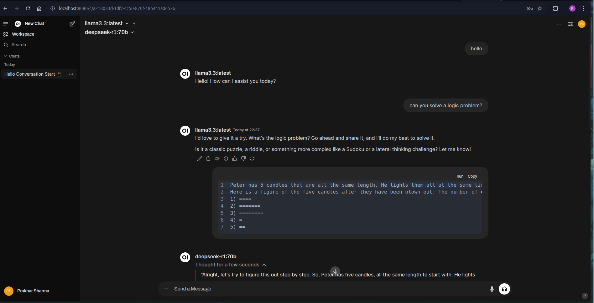

Running Ollama and Open WebUI on HPC with Apptainer#
This guide explains how to run Ollama in an Apptainer container on an HPC system without requiring sudo. We have two options
Build the apptainer image of ollama.
build using local installation of apptainer
build using docker container of apptainer.
We will use docker container of ollama and add functionality on top of it. Copy the following apptainer build def file.
Build apptainer image of ollama#
Bootstrap: docker
From: ollama/ollama:latest
%post
# install miniconda
apt-get -y update && apt-get install -y wget bzip2
wget https://repo.anaconda.com/miniconda/Miniconda3-latest-Linux-x86_64.sh -O ~/miniconda.sh
bash ~/miniconda.sh -b -p /opt/conda
rm ~/miniconda.sh
export PATH="/opt/conda/bin:$PATH"
echo ". /opt/conda/etc/profile.d/conda.sh" >> ~/.bashrc
echo "conda activate" >> ~/.bashrc
# install pip
apt-get install -y python3-pip
# configure conda
conda config --add channels conda-forge
# install ollama
pip3 install ollama
# install numpy, matplotlib, pandas, rich, jupyter
conda install -c conda-forge numpy matplotlib pandas rich jupyterlab ipykernel
%environment
export PATH="/opt/conda/bin:$PATH"
. /opt/conda/etc/profile.d/conda.sh
conda activate
Say we save the definition file as ollama.def. We can build the apptainer image using the following command.
Local Installation of Apptainer#
apptainer build ollama.def
Docker Container of Apptainer#
Open a privileged docker container with the following command. Make sure the definition file is in the $PWD.
docker run --rm -it \
--privileged \
-v /var/run/docker.sock:/var/run/docker.sock \
-v "$PWD:/workspace" \
-w /workspace \
ghcr.io/apptainer/apptainer:latest
Now, we can build the apptainer image using the following command.
apptainer build ollama.sif ollama.def
Now we can push to apptainer image to a HPC cluster. Here I am using Sunbird as doesn’t have the QOS bullshit and has a preinstalled rsync. Remember to push it to /scratch as ~ is mostly limited in space.
rsync --progress -avz ollama.sif sunbird:/scratch/s.1915438/
Download models on the cluster#
Once we have the image on the cluster, we can start ollama on the login node of the cluster and download the models, as internet is not available or very slow on the compute nodes.
You need to look for the apptainer module on your cluster.
module load apptainer/1.0.3
Now we simply run the apptainer image on the login node with /scratch/$USER mounted as /home/$USER/ in the container. This diverts all the file storage to scratch partition and doesn’t fill up the home directory.
apptainer shell --home /scratch/$USER:/home/$USER ollama.sif
By default, the models are stored at ~/.ollama/ which is now /scratch/$USER/.ollama/.
Inside the apptainer shell, we can use ollama as usual.
ollama serve
This starts the ollama server on the login node.
Now we need to open another ssh connection to the cluster has open the apptainer shell the same way as above. Now we can use ollama to install models. This can be much faster if you have a multiplaxer like tmux but I too stupid to use it.
ollama list
This should be empty for now. Now we can download any model. Let us try llama 3.3. We can also download deepseek R1.
ollama run llama3.3
This will pull 40B version of llama3.3. Now we can list the models and see llama3.3 in the list. Now you can close all the ssh connections to the cluster.
Running Ollama on the compute node#
Now that everything is set up, we can run ollama on the compute node. We can use the following script to run ollama on the compute node.
srun --pty --account=scw1901 --gres=gpu:4 --partition=accel_ai /bin/bash
Here I am requesting 4 NVIDIA A100 40GB, total 160GB of GPU memory. You can change the number of GPUs and the partition according to your requirement.
Now we can use the exact same command to start the ollama server on the compute node but with --nv flag to use all the GPUs.
apptainer shell --home /scratch/$USER:/home/$USER --nv ollama.sif
You can check the GPUs using nvidia-smi.
(base) nvidia-smi
Tue Jan 28 20:20:06 2025
+-----------------------------------------------------------------------------------------+
| NVIDIA-SMI 550.54.14 Driver Version: 550.54.14 CUDA Version: 12.4 |
|-----------------------------------------+------------------------+----------------------+
| GPU Name Persistence-M | Bus-Id Disp.A | Volatile Uncorr. ECC |
| Fan Temp Perf Pwr:Usage/Cap | Memory-Usage | GPU-Util Compute M. |
| | | MIG M. |
|=========================================+========================+======================|
| 0 NVIDIA A100-PCIE-40GB Off | 00000000:28:00.0 Off | 0 |
| N/A 40C P0 43W / 250W | 0MiB / 40960MiB | 0% Default |
| | | Disabled |
+-----------------------------------------+------------------------+----------------------+
| 1 NVIDIA A100-PCIE-40GB Off | 00000000:44:00.0 Off | 0 |
| N/A 44C P0 49W / 250W | 0MiB / 40960MiB | 0% Default |
| | | Disabled |
+-----------------------------------------+------------------------+----------------------+
| 2 NVIDIA A100-PCIE-40GB Off | 00000000:A3:00.0 Off | 0 |
| N/A 38C P0 48W / 250W | 0MiB / 40960MiB | 0% Default |
| | | Disabled |
+-----------------------------------------+------------------------+----------------------+
| 3 NVIDIA A100-PCIE-40GB Off | 00000000:A4:00.0 Off | 0 |
| N/A 38C P0 47W / 250W | 0MiB / 40960MiB | 0% Default |
| | | Disabled |
+-----------------------------------------+------------------------+----------------------+
+-----------------------------------------------------------------------------------------+
| Processes: |
| GPU GI CI PID Type Process name GPU Memory |
| ID ID Usage |
|=========================================================================================|
| No running processes found |
+-----------------------------------------------------------------------------------------+
Running Ollama#
Now we can start the ollama server on the compute node.
ollama serve
This will show you a long list of outputs. Somewhere near the bottom you will see it is recognising all the GPUs.
GIN-debug] POST /api/pull --> github.com/ollama/ollama/server.(*Server).PullHandler-fm (5 handlers)
[GIN-debug] POST /api/generate --> github.com/ollama/ollama/server.(*Server).GenerateHandler-fm (5 handlers)
[GIN-debug] POST /api/chat --> github.com/ollama/ollama/server.(*Server).ChatHandler-fm (5 handlers)
[GIN-debug] POST /api/embed --> github.com/ollama/ollama/server.(*Server).EmbedHandler-fm (5 handlers)
[GIN-debug] POST /api/embeddings --> github.com/ollama/ollama/server.(*Server).EmbeddingsHandler-fm (5 handlers)
[GIN-debug] POST /api/create --> github.com/ollama/ollama/server.(*Server).CreateHandler-fm (5 handlers)
[GIN-debug] POST /api/push --> github.com/ollama/ollama/server.(*Server).PushHandler-fm (5 handlers)
[GIN-debug] POST /api/copy --> github.com/ollama/ollama/server.(*Server).CopyHandler-fm (5 handlers)
[GIN-debug] DELETE /api/delete --> github.com/ollama/ollama/server.(*Server).DeleteHandler-fm (5 handlers)
[GIN-debug] POST /api/show --> github.com/ollama/ollama/server.(*Server).ShowHandler-fm (5 handlers)
[GIN-debug] POST /api/blobs/:digest --> github.com/ollama/ollama/server.(*Server).CreateBlobHandler-fm (5 handlers)
[GIN-debug] HEAD /api/blobs/:digest --> github.com/ollama/ollama/server.(*Server).HeadBlobHandler-fm (5 handlers)
[GIN-debug] GET /api/ps --> github.com/ollama/ollama/server.(*Server).PsHandler-fm (5 handlers)
[GIN-debug] POST /v1/chat/completions --> github.com/ollama/ollama/server.(*Server).ChatHandler-fm (6 handlers)
[GIN-debug] POST /v1/completions --> github.com/ollama/ollama/server.(*Server).GenerateHandler-fm (6 handlers)
[GIN-debug] POST /v1/embeddings --> github.com/ollama/ollama/server.(*Server).EmbedHandler-fm (6 handlers)
[GIN-debug] GET /v1/models --> github.com/ollama/ollama/server.(*Server).ListHandler-fm (6 handlers)
[GIN-debug] GET /v1/models/:model --> github.com/ollama/ollama/server.(*Server).ShowHandler-fm (6 handlers)
[GIN-debug] GET / --> github.com/ollama/ollama/server.(*Server).GenerateRoutes.func1 (5 handlers)
[GIN-debug] GET /api/tags --> github.com/ollama/ollama/server.(*Server).ListHandler-fm (5 handlers)
[GIN-debug] GET /api/version --> github.com/ollama/ollama/server.(*Server).GenerateRoutes.func2 (5 handlers)
[GIN-debug] HEAD / --> github.com/ollama/ollama/server.(*Server).GenerateRoutes.func1 (5 handlers)
[GIN-debug] HEAD /api/tags --> github.com/ollama/ollama/server.(*Server).ListHandler-fm (5 handlers)
[GIN-debug] HEAD /api/version --> github.com/ollama/ollama/server.(*Server).GenerateRoutes.func2 (5 handlers)
time=2025-01-28T20:20:43.520Z level=INFO source=routes.go:1238 msg="Listening on [::]:11434 (version 0.5.7-0-ga420a45-dirty)"
time=2025-01-28T20:20:43.521Z level=INFO source=routes.go:1267 msg="Dynamic LLM libraries" runners="[cpu cpu_avx cpu_avx2 cuda_v11_avx cuda_v12_avx]"
time=2025-01-28T20:20:43.529Z level=INFO source=gpu.go:226 msg="looking for compatible GPUs"
time=2025-01-28T20:20:45.235Z level=INFO source=types.go:131 msg="inference compute" id=GPU-f0f75b01-5308-3077-172f-96362c1bf9de library=cuda variant=v12 compute=8.0 driver=12.4 name="NVIDIA A100-PCIE-40GB" total="39.4 GiB" available="39.0 GiB"
time=2025-01-28T20:20:45.235Z level=INFO source=types.go:131 msg="inference compute" id=GPU-413d5f61-872d-4aed-46bc-f38dcdec40cb library=cuda variant=v12 compute=8.0 driver=12.4 name="NVIDIA A100-PCIE-40GB" total="39.4 GiB" available="39.0 GiB"
time=2025-01-28T20:20:45.235Z level=INFO source=types.go:131 msg="inference compute" id=GPU-662a91bd-6e16-ba7c-0cf7-a714e04c7c5a library=cuda variant=v12 compute=8.0 driver=12.4 name="NVIDIA A100-PCIE-40GB" total="39.4 GiB" available="39.0 GiB"
time=2025-01-28T20:20:45.235Z level=INFO source=types.go:131 msg="inference compute" id=GPU-5ece977e-6744-5c78-82c9-1fe2ecee90eb library=cuda variant=v12 compute=8.0 driver=12.4 name="NVIDIA A100-PCIE-40GB" total="39.4 GiB" available="39.0 GiB"
DON’T CLOSE THIS TERMINAL. THIS WILL CLOSE THE OLLAMA SERVER.
Port Forwarding the Ollama Server to local machine#
In order to use Ollama with the web UI, we need to forward the port to the local machine. We need two things the name of the computer node and the port number used by Ollama.
The name of the compute node can be found using multiple ways. The easiest way is the scroll up in the terminal where we started the apptainer shell but after the job submission. The prompt should look like this:
[s.1915438@scs2042(sunbird) ollama]$ nvidia-smi
Here scs2042 is the name of the compute node. Otherwise, you can also open a new terminal and run the following command to find the name of the compute node.
squeue -u $USER
This will show the job id and the name of the compute node.
JOBID PARTITION NAME USER ST TIME NODES NODELIST(REASON)
7969400 accel_ai get_plot s.213225 R 1-06:32:14 1 scs2041
7969263 accel_ai bash c.c20987 R 1-11:25:15 1 scs2043
7969718_0 accel_ai Sp4_Nf2_ s.241444 R 8:30:28 1 scs2045
Finding the port#
Unless you have modified something, the default port for Ollama is 11434.
Port Forwarding#
We will use the following command to forward the port to the local machine.
ssh -N -L 11434:scs2043:11434 s.1915438@sunbird.swansea.ac.uk
Here 11434 is the port number used by Ollama and scs2043 is the name of the compute node. We are porting them to port number 11434 on the local machine. We can also use alias as follows:
ssh -N -L 11434:scs2043:11434 sunbird
You can check if the port is forwarded correctly by opening the URL http://localhost:11434 in the browser. You should see the a simple output saying Ollama is running!.
Using Ollama WebUI#
Now we need a nice GUI frontend to use Ollama. We can use this web UI. they provide a docker image for ease of use. We can use the following command to run the web UI.
docker run -d --network=host -v open-webui:/app/backend/data -e OLLAMA_BASE_URL=http://127.0.0.1:11434 --name open-webui --restart always ghcr.io/open-webui/open-webui:main
More trobleshooting can be found here.
This will pull the image if not already present and start the web UI. Make sure OLLAMA_BASE_URL=http://127.0.0.1:11434 is set correctly set as the local port running Ollama is 11434.
Now we can open open this URL in the browser http://localhost:8080 and use the web UI to interact with Ollama. First time we need to create an account and login which is just local.
Now you can use the models and chat with Ollama using the web UI. Here are some snips.
